코드 보기
#방향이 없으면 디폴트가 '+'
limit(1/x,x=0)Infinity$ $
이 장에서는 미분적분학의 기본 개념인 함수의 극한에 대해 살펴볼 것이다. 함수의 극한은 함수에 대한 미분과 적분을 정의하는 데 중요한 개념이다. 극한의 개념은 함수의 연속성, 도함수, 정적분 등을 정의 할 때 중요하게 사용됨을 알 수 있을 것이다. 그러므로 극한을 계산하는 것도 중요하지만 극한의 정의를 정확히 이해하는 것이 필요하다.
먼저 극한의 직관적인 의미를 토대로 함수의 극한에 대한 정확한 정의를 살펴본다. 극한의 성질을 이용하여 함수의 극한 계산을 대수적인 연산으로 구해본다. 또 실제 생활에 대한 자연현상을 수학적 모델로 설명하는 연속함수를 정의하고, 연속함수의 성질을 다룰 것이다.
이 절에서는 19세기 초반 코시Cauchy에 의해 확립된 함수의 극한의 개념을 직관적 의미로 생각해보고, 이를 토대로 함수의 극한의 엄밀한 수학적 의미를 정의한다. 극한의 엄밀한 정의를 이용하여 다항함수, 유리함수, 무리함수 등 여러 가지 함수의 극한을 증명해본다.
이 절에서는 극한의 직관적 의미를 토대로 극한의 수학적 의미를 정의하고 다항함수, 유리함수, 무리함수등 여러 가지 함수의 극한을 증명해 본다.
수열 \(\{ a_n \}\)에서 \(n\)이 한없이 커질 때 수열의 항 \(a_n\)이 어떤 값에 한없이 가까워지면 그 값을 수열 \(\{ a_n \}\)의 극한 또는 수열 \(\{ a_n \}\)의 극한값이라고 한다. 이 개념은 함수의 극한으로 확장된다.
함수 \(f\)가 입력값 \(x\)에 대해 \(f(x)\)를 대응시킨다고 할 때, \(x\)가 어떤 값으로 가까워질 때 \(f(x)\)가 가까워지는 값이 있으면 그것을 함수의 극한 또는 함수의 극한값이라고 한다.
극한은 연속성, 미분가능성 등을 정의하는데 중요한 토대가 된다.
실숫값 함수 \(f(x)\)와 정의역 또는 그 경계에 있는 점 \(a\)가 주어졌을 때, \(x\)가 \(a\)에 한없이 가까이 가면 함숫값 \(f(x)\)가 어떤 실수 \(L\)로 한없이 가까이 간다고 하자. 이때 함수 \(f\)가 \(x=a\)에서 극한값을 가진다고 하고, 이를
\[\displaystyle L=\lim_{x \to a} f(x)\]
라고 쓴다. 보다 엄밀한 수학적 정의는 뒤에 소개하도록 한다.
극한이 존재하지 않는 경우에는 발산한다고 한다.
특히 수열의 항이나 함숫값이 한없이 커지는 것은 ’양의 무한대’로 발산한다고 하고, 한없이 작아지는 것은 ’음의 무한대’로 발산한다고 하며, 기호로는
\[\displaystyle \lim_{n \to \infty}a_n = \infty, \quad \lim_{n \to \infty}a_n = -\infty, \quad \lim_{x \to a}f(x) = \infty, \quad \lim_{x \to a}f(x) = -\infty\]
등으로 나타낸다.
보기 1 수열 \(\left\{ \frac{1}{n} \right\}\)은 \(n\)이 한없이 커짐에 따라 항 \(\frac{1}{n}\)이 \(0\)으로 가까이 감을 알 수 있다. 따라서 \(0\)을 수열 \(\left\{ \frac{1}{n} \right\}\)의 극한값이라 하고, 이를 기호로 \(\displaystyle \lim_{n \to \infty} \frac{1}{n} = 0\)으로 나타낸다.
보기 2 수열 \(\{ a_n \}\)의 일반항이 \(a_n = (-1)^n\)일 때, \(n\)이 한없이 커짐에 따라 \(a_n\)이 \(-1\)과 \(1\)을 주기적으로 취함을 알 수 있다. 따라서 수열 \(\{ a_n \}\)의 극한은 존재하지 않는다. 이와 같이 일정한 값에 수렴하지도 않고 양의 무한대나 음의 무한대로 발산하지 않으면 이 수열은 진동한다고 한다.
#방향이 없으면 디폴트가 '+'
limit(1/x,x=0)Infinitylimit(1/x,x=0,dir='+'), limit(1/x,x=0,dir='-')(+Infinity, -Infinity)limit((-1)^x,x=oo)indlimit((-1)^x,x=oo,dir='+')indreset(); load('ch2.sage')
f(x)=(-1)^x
x0=oo
극한(f,x0)f(x)=2*x/(x-3)
x0=3
극한(f,x0)f(x)=1/x^2
x0=0
극한(f,x0)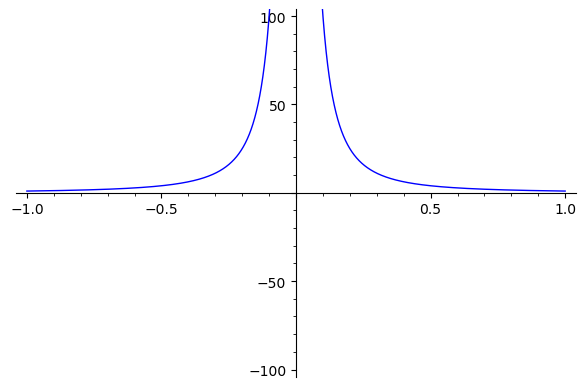
\(\displaystyle \lim _ { x \rightarrow a }~ { f(x)}=L\)의 의미는 무엇일까?
직관적으로 말하면 \(x\)가 \(a\)에 아주 가까이 갈 때 \(f(x)\)가 아주 가까이 가는 값을 \(L\)로 정의한다는 것이다. 여기에서 \(x=a\)일 필요는 없고 \(f(x)=L\)일 필요도 없다.
예를 들어 \(x\)가 1에 아주 가까이 갈 때 \(f(x)=\dfrac{ x ^ {2} -1}{x-1 }\)의 값은 어느 값에 접근할까? 즉\(\displaystyle \lim _ { x \rightarrow 1 } { \dfrac{ x ^ {2} -1}{x-1 } }\)의 값은 얼마일까?
아래 그림과 표에서 살펴보자.

\[ \begin{array}{|c|c|} \hline x & \dfrac{ x ^ {2} -1}{x-1 } \\ \hline 0.9& 1.9\\ \hline 0.99& 1.99\\ \hline 0.999& 1.999\\ \hline 0.9999& 1.9999\\ \hline 0.99999& 1.99999\\ \hline \end{array} \]
표를 살펴보면 \(x\)가 \(1\)의 오른쪽에서 \(1\)로 접근하는 경우, \(x\)가 \(1\)의 왼쪽에서 \(1\)로 접근하는 경우 모두 함수 \(f(x)=\dfrac{ x ^ {2} -1}{x-1 }\)의 값은 \(2\)에 가까워짐을 알 수 있다.
reset(); load('ch2.sage')
f(x)=(x^2-1)/(x-1)
x0=1
극한(f,x0,upperbound=3)
극한표(f,x0,r=10) # r : 공비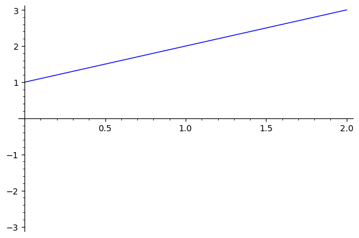
def Layout():
import ipywidgets as widgets
T = table([['a', 'b', 'c'], [111,222,333],[4,5,6]])
T.options(align='right')
G = Graph({0:[1,2],2:[0,4],3:[1,4],4:[1,0],5:[1,3,4]})
# Define left and right containers where to place output
output_l = widgets.Output(layout={'border': '2px solid blue', 'width': '40%'})
output_r = widgets.Output(layout={'border': '2px solid red', 'width': '40%'})
# Fill left container
with output_l:
show(G)
# Fill right container
with output_r:
show(T)
# Show containers
display(widgets.HBox([output_l,output_r], layout={'justify_content':'space-around'}))
return
Layout()보기 3
| \(x\) | 1 | 0.5 | 0.25 | 0.1 | 0.05 |
|---|---|---|---|---|---|
| \(\frac{\sin x}{x}\) | 0.84147098 | 0.95885108 | 0.98961584 | 0.99833417 | 0.99958339 |
| \(x\) | 0.025 | 0.01 | 0.005 | 0.002 | 0.001 |
| \(\frac{\sin x}{x}\) | 0.99989584 | 0.99998333 | 0.99999583 | 0.99999933 | 0.99999983 |
함수 \(\frac{\sin x}{x}\)는 \(0\)에서 정의되지 않지만 \(x\)가 \(0\)에 한없이 가까워질수록 \(\frac{\sin x}{x}\)는 \(1\)에 한없이 가까워지는 것을 알 수 있다. 즉 \(\displaystyle \lim_{x \to 0}\frac{\sin x}{x}=1\)이다. 실제로 극한값이 정확히 1이라는 것은 삼각함수의 극한을 참고하여라.
f(x)=sin(x)/x
x0=0
극한(f,x0,upperbound=1)
극한표(f,x0,r=2)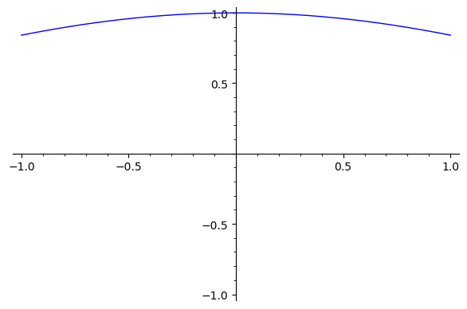
보기 4
| \(x\) | 1 | 0.5 | 0.1 | 0.01 | 0.001 |
|---|---|---|---|---|---|
| \(\frac{1}{x^2}\) | 1 | 4 | 100 | 10000 | 1000000 |
\(x\)가 \(0\)에 한없이 가까워질 때, \(\frac{1}{x^2}\)은 한없이 커지는 것을 알 수 있다. 즉 \(\displaystyle \lim_{x \to 0}\frac{1}{x^2} = \infty\)이다.
보기 5 \(\sin \frac{1}{x}\)은 \(x=0\)에서 극한을 가지지 않는다.
먼저 \(x\)가 \(a\)에 접근하는 방법에 따라 왼쪽에서 접근하는 좌극한과 오른쪽에서 접근하는 우극한을 정의해 보자.
정의. 좌극한과 우극한
\(x\)가 \(a\)의 좌측에서 \(a\)에 아주 가까이 갈 때 \(f(x)\)가 \(L\)에 아주 가까이 가면 좌극한이 존재한다고 하고 \(\displaystyle \lim _ { x \rightarrow a- } { f(x)}=L\)이라 표시한다.
\(x\)가 \(a\)의 우측에서 \(a\)에 아주 가까이 갈 때 \(f(x)\)가 \(L\)에 아주 가까이 가면 우극한이 존재한다고 하고 \(\displaystyle \lim _ { x \rightarrow a+} { f(x)}=L\)이라 표시한다.
예제
가우스함수 \([x]\)에 대하여 \(\displaystyle \lim _ {x \to 1-} {} ~[x]\)와 \(\displaystyle \lim _ {x \to 1+} {} ~[x]\)을 구하여라.
(풀이)
\(x=1\)에서의 좌극한은 \(\displaystyle \lim _ { x \rightarrow 1- } ~{[x] }=0\)이고, 우극한은 \(\displaystyle \lim _ { x \rightarrow 1+ } ~{[x] }=1\)이다.■

정리. 극한과 좌극한, 우극한의 관계
\(\displaystyle \lim _ { x \rightarrow a } { f(x)}=L\)일 필요충분조건은 \(\displaystyle \lim _ { x \rightarrow a{- }} { f(x)}=L=\displaystyle \lim _ { x \rightarrow a{+ }} { f(x)}\)이다.

예제
아래 주어진 함수 \(f(x)=\dfrac{ x ^ {2} -1}{x-1 }\)에서 극한이 존재하는 점을 찾고 그때 극한값을 구하여라.
\(\displaystyle \lim _ { x\to -1 } { f(x)}, \qquad \lim _ { x\to 1 } ~{ f(x)}\)
(풀이)
\(x=-1\)에서 극한이 존재하고 극한값 \(\displaystyle \lim _ { x\to -1 } { f(x)}=1\)이다.
또 \(x=1\)에서도 극한값이 존재하고 극한값 \(\displaystyle \lim _ { x\to 1 } ~{ f(x)}=3\)이다.■
직관적인 의미에서 극한은 \(x\)가 \(a\)에 아주 가까이 갈 때 \(f(x)\)가 \(L\)에 아주 가까이 가는 의미라고 앞에서 언급했다. 직관적인 의미의 극한을 어떻게 수학적으로 정의할 것인가? 즉 아주 가까움의 정의를 수학적으로 어떻게 할 것이냐를 생각해보자. 실수의 가까움은 두 수의 차의 절대 값으로 표현하면 된다. 그래서 \(\left | x-a \right |\)와 \(\left | f(x)-L \right |\)이 필요하고 \(x\)는 \(a\)에 \(f(x)\)는 \(L\)에 아주 가까워야 하므로 이것들의 거리를 아주 가깝게 정의하기 위한 아주 작은 양수들(여기서 아주 작은 양수의 기호로 \(\varepsilon\)과 \(\delta\)를 사용할 것이다)이 필요하게 된다. 또한 \(x\)가 $a $에 아주 가까이 갈 때 \(f(x)\)가 \(L\)에 아주 가까워지므로 \(f(x)\)와 \(L\)이 임의의 아주 작은 양수 \(\varepsilon\)보다 가까워지려면 (즉, \(|f(x)-L|< \varepsilon\)이 되려면) \(x\)와 \(a\)를 아주 가까이 만드는 아주 작은 양수 \(\delta\)가 존재하면 된다. 이것을 정리해 보면 다음과 같은 극한의 엄밀한 정의를 얻을 수 있다.
정의. (수학적)극한의 엄밀한 정의
함수 \(f\)는 점 \(a\)를 포함한 개구간에서 정의된다고 하자(단, \(a\)는 제외).
\(\displaystyle \lim _ {x \to a } {f(x)=L}\)이란
임의의 \(\varepsilon >0\)에 대하여 적당한 \(\delta >0\)가 존재하여 \[0<| x-a|< \delta \text{이면} |f(x)-L|< \varepsilon\] 이 성립
한다는 의미이다.
예제
\(\displaystyle \lim _ { x\to 3 }~ { (3x+5)}=14\)임을 보여라.
(풀이)
임의의 \(\varepsilon >0\)에 대하여 \(0<| x-3|< \delta\)이면 \(|(3x+5)-14|< \varepsilon\)을 만족하는 \(\delta >0\)를 구해보자. \(|(3x+5)-14|\)를 \(|x-3|\)으로 표현하면 쉽게 \(\delta\)를 구할 수 있다.
즉 \(|(3x+5)-14|=|3x-9|=|3(x-3)|=3|x-3|\)이다. \(0<| x-3|< \delta\)이므로
\(|(3x+5)-14|<3 \delta\)이고 \(\delta = \dfrac{ \varepsilon }{ 3}\)이면 \(|(3x+5)-14|< \varepsilon\)이 성립한다. 예를 들어 \(3x+5\)와
\(14\)를 \(1\)보다 가깝게 만들려면 \(x\)와 \(3\)을 적어도 \(\dfrac{ 1}{ 3}\)보다 가깝게 만들면 된다. 또한 \(3x+5\)와 \(14\)를 \(\dfrac{ 1}{ 10}\)보다 가깝게 만들려면 \(x\)와 \(3\)을 적어도 \(\dfrac{ 1}{ 30}\)보다 가깝게 만들면 된다. 따라서 \(3x+5\)와 \(14\)를 아주 작은 양수 \(\varepsilon\)보다 가깝게 만들려면 \(x\)와 \(3\)을 적어도 \(\dfrac{ \varepsilon }{ 3}\)보다 가깝게 만들면 된다는 것이다.■
⌛[문제 1.4] \(\displaystyle \lim _ { x\to 1 }~ {( -3x +5)}=2\)에서 \(\varepsilon = \dfrac{ 1}{10 }\)에 대응되는 \(\delta\)를 구하여라.
reset(); load('ch2.sage')
f(x)=3*x^2+3; x0=2
입실론델타(f,x0)예제
\(\displaystyle \lim _ {x \to 1} {} ~(-x ^ {2} +3x+5)=7\)임을 보여라.
(풀이)
임의의 \(\varepsilon >0\)에 대하여 \(0<| x-1|< \delta\)이면 \(|(-x ^ {2} +3x+5)-7|< \varepsilon\)을 만족하는 \(\delta >0\)를 구해보자. \(|(-x ^ {2} +3x+5)-7|\)를 \(|x-1|\)으로 표현하면
\(|(-x ^ {2} +3x+5)-7|=|-x ^ {2} +3x-2|=|-(x ^ {2} -3x+2)|=|x-1||x-2|\)이다. \(0<| x-1|< \delta\)
이므로 \(|(-x ^ {2} +3x+5)-7|< \delta |x-2|\)이 성립한다. 여기서 \(\delta = \dfrac{ \varepsilon }{|x-2|}\)로 선택하면 안 된다. \(\delta\)는 변수를 포함하지 않는 적당한 양수로 선택해야 한다. 그러면 \(|x-2|\)가 어떤 양수 값보다 작아야 \(|(-x ^ {2} +3x+5)-7|< \varepsilon\)을 만족하는 양수 \(\delta\)를 구할 수 있는가? 우선 \(x\)는 \(1\)의 근방이므로 (즉 \(0<| x-1|< \delta\))이므로 \(1-\delta <x <1+\delta\)이고 만약 \(\delta\)를 \(1\)로 생각하면
\(0<x<2\)이고 \(-2<x-2<0\)이므로 \(|x-2|<2\)보다 작음을 알 수 있다. 이러한 관점에서
\(|(-x ^ {2} +3x+5)-7|=\) \(|x-1||x-2|< |x-2| \delta <2 \delta\)이고 \(\delta =\min \left\{ 1,\dfrac{\varepsilon }{2} \right\}\)이면
\(|(-x ^ {2} +3x+5)-7|< \varepsilon ~\)이 성립한다. 여기에서 \(\delta\)가 꼭 \(1\)아니어도 된다. 만약 \(\delta\)를 \(\dfrac{ 1}{ 2}\)로 생각하면 \(\dfrac{ 1}{2 } <x< \dfrac{ 3}{ 2}\)이고 \(-\dfrac{ 3}{2 } <x-2< - \dfrac{ 1}{ 2}\)이므로 \(|x-2|< \dfrac{ 3}{2 }\)보다 작음을 알 수 있다.이러한 관점에서 \(|(-x ^ {2} +3x+5)-7|=|x-1||x-2|<|x-2| \delta < \dfrac{3}{2} \delta\)이고 \(\delta =\min \left\{ \dfrac{ 1}{2 } , \dfrac{ 2}{ 3} \varepsilon \right\}\)이면
\(|(-x ^ {2} +3x+5)-7|< \varepsilon\)이 성립된다. 하지만 \(\delta\)가 \(1\)인 경우가 더 간단하기 때문에 대부분 \(\delta\)를 \(1\)로 생각한 경우로 증명하면 된다.■
f(x)=-x^2+3*x+5; x0=1
입실론델타(f,x0)예제
\(\displaystyle \lim _ { x\to 3 }~ {(x ^ {2} + 1) }=10\)임을 보여라.
(풀이)
임의의 \(\varepsilon >0\)에 대하여 \(0<| x-3|< \delta\)이면 \(|(x ^ {2} +1) -10|< \varepsilon\)를 만족하는 \(\delta >0\)를 구해보자. \(0<| x-3|< \delta\)이므로 \(|(x ^ {2} +1) -10|=|x ^ {2} -9|=|x+3| |x-3|<|x+3|\delta\)이 성립되고 우리
가 생각하는 \(x\)는 \(3\)의 근방 이므로 \(3-\delta <x <3+\delta\)이고 만약 \(\delta\)를 \(1\)로 생각하면 \(2<x<4\)이고 \(| x+3 |<7\)이다. 이러한 관점에서 \(|(x ^ {2} +1) -10|=|x ^ {2} -9|=|x+3| |x-3|<|x+3|\delta <7\delta\)이 되므로\(\delta =\min \left\{ 1,\dfrac{\varepsilon }{7} \right\}\)이면 \(|x ^ {2} +1 -10|< \varepsilon\)이 성립한다.■
f(x)=x^2+1; x0=10
입실론델타(f,x0)예제
\(\displaystyle \lim _ { x\to 6} { \dfrac{1}{x } }= \dfrac{ 1}{ 6}\)임을 보여라.
(풀이)
임의의 \(\varepsilon >0\)에 대하여 \(0<| x-6|< \delta\)이면 \(\left |\dfrac{ 1}{ x}- \dfrac{ 1}{ 6} \right |< \varepsilon\)를 만족하는 \(\delta >0\)를 구해보자.
\(0<| x-6|< \delta\)이므로 \(\left |\dfrac{ 1}{ x}- \dfrac{ 1}{ 6} \right |= \dfrac{|x-6|}{6|x| }< \dfrac{ \delta }{6|x| }\)이 성립한다.
이제 \(\dfrac{ 1}{6 |x|}\)의 값이 어떤 양수 값보다 작은지 결정하자.
\(0<| x-6|< \delta\)이므로 \(-\delta +6 < x<\delta +6\)이다. 만약 \(\delta\)를 \(1\)로 생각하면 \(5<x<7\)이고
\(30<6x<42\)이므로 \(\dfrac{ 1}{6 |x|} < \dfrac{ 1}{ 30}\)이다. 이러한 관점에서 \(\left |\dfrac{ 1}{ x}- \dfrac{ 1}{ 6} \right |= \dfrac{|x-6|}{6|x| }< \dfrac{ \delta }{6|x| } < \dfrac{ 1}{ 30}\delta\)이고 \(\delta = \min \left\{ 1,30 \varepsilon \right\}\)이면 \(\left |\dfrac{ 1}{ x}- \dfrac{ 1}{ 6} \right |< \varepsilon\)이 성립한다.■
f(x)=1/x; x0=6
입실론델타(f,x0)예제
\(\displaystyle \lim _ { x\to 6} { \dfrac{ 7}{x-5 } }=7\)임을 보여라.
(풀이)
임의의 \(\varepsilon >0\)에 대하여 \(0<| x-6|< \delta\)이면 \(\left |\dfrac{ 7}{x-5 }-7\right |< \varepsilon\)를 만족하는 \(\delta >0\)를 구해보자.
\(0<| x-6|< \delta\)이므로 \(\left |\dfrac{ 7}{ x-5}-7 \right |=\left | \dfrac{-7(x-6) }{x-5 } \right |= \dfrac{ 7|x-6|}{|x-5| }< \dfrac{ 7}{|x-5| }\delta\)을 만족한다.
이제 \(\dfrac{ 1}{ |x-5|}\)의 값이 어떤 양수 값보다 작은지 결정하자.
\(0<| x-6|< \delta\)이므로 \(-\delta +6 < x<\delta +6\)이다. 만약 \(\delta\)를 \(1\)로 생각하면 \(5<x<7\)이고
\(0<x-5<2\)이다. 여기서 우리가 원하는 \(\dfrac{ 1}{ |x-5|}\)의 유계 값을 생각하기는 어렵다.(왜 그런지 이유를 생각해 보라) 만약 \(\delta\)를 \(\dfrac{1}{2}\)로 생각하면 \(\dfrac{ 11}{2 } <x< \dfrac{ 13}{2 }\)이고 \(\dfrac{ 1}{ 2} <x-5< \dfrac{ 3}{2 }\)이 되고 \(\dfrac{ 1}{ |x-5|}<2\)이다. 이러한 관점에서
\(\left | \dfrac{7}{x-5} -7 \right | = \left | \dfrac{-7(x-6)}{x-5} \right |= \dfrac{7|x-6|}{|x-5|} < \dfrac{7}{|x-5|} \delta <14 \delta\)이고\(\delta =\min \left\{ \dfrac{ 1}{ 2} ,\dfrac{\varepsilon }{14} \right\}\)이면
\(\left |\dfrac{ 7}{x-5 }-7\right |< \varepsilon\)이 성립한다.■
⌛[문제 1.9] 극한 \(\displaystyle \lim _ {x \rightarrow 3} \dfrac{1}{x} = \dfrac{1}{3}\)에서 주어진 \(\varepsilon = 0.005\)에 대하여 \(\delta\)를 구하라.
f(x)=7/(x-5); x0=6
입실론델타(f,x0)예제
\(\displaystyle \lim _ { x\to 6 } { \sqrt { x-4} }= \sqrt { 2}\)임을 보여라.
(풀이)
임의의 \(\varepsilon >0\)에 대하여 \(0<| x-6|< \delta\)이면 \(| \sqrt {x-4} - \sqrt {2} |< \varepsilon\)을 만족하는 \(\delta >0\)를 구해보자. \(0<| x-6|< \delta\)이면
\(|\sqrt { x-4} - \sqrt { 2} |=| \dfrac{(\sqrt { x-4} - \sqrt { 2} )( \sqrt { x-4 }+ \sqrt { 2} )}{ \sqrt { x-4} + \sqrt { 2} } | = \dfrac{|x-6|}{ \sqrt { x-4}+ \sqrt { 2} } < \dfrac{ \delta }{ \sqrt { 2} }\)이다.
여기서 \(\sqrt { x-4} \geq 0\)라는 사실을 사용했고 \(\delta = \sqrt { 2} \varepsilon\)이면 극한을 증명 할 수 있다. 단, 여기서 \(\delta \leq 2\)이다. 왜냐하면 주어진 \(x\)의 범위 내에서 무리함수가 정의되어야 하므로
\(x-4 \geq Q0\)이 성립해야한다. 따라서 \(0<| x-6|< \delta\)에서 \(-\delta +6<x<\delta +6\)이고
\(-\delta +2<x-4 <\delta +2\)이므로 \(-\delta +2 \geq 0\)이여야 한다. 그러므로 \(\delta = \min \{2, \sqrt { 2} \varepsilon \}\)이면 증명이 완료된다.■
f(x)=sqrt(x-4); x0=6
입실론델타(f,x0)

reset(); load('ch2.sage')
f(x)=sin(1/x); x0=0
극한(f,x0,upperbound=1)
극한표(f,x0,r=2)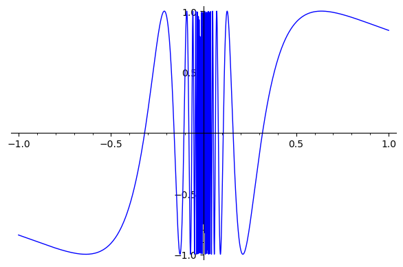


f(x)=1/x^2
x0=0
극한(f,x0,upperbound=1000)
극한표(f,x0,r=2)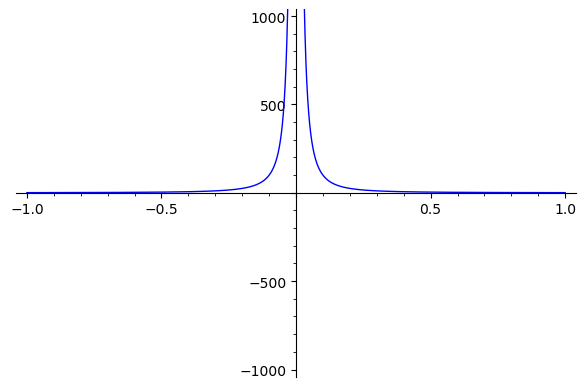

f(x)=2*x/(x-3)
x0=3
극한(f,x0,upperbound=100)
극한표(f,x0,r=2)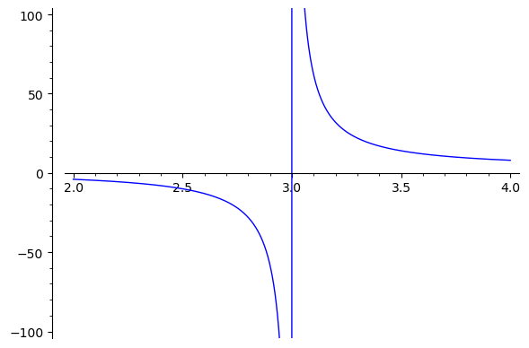

f(x)=tan(x)
x0=pi/2
극한(f,x0,upperbound=30)
극한표(f,x0,r=2)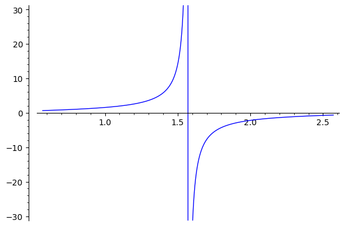
이 절에서는 극한의 성질들을 살펴보고 유계되면서 진동하는 함수와 같이 직접적으로 극한을 구하지 않고 같은 극한값을 가지는 두 함수 사이에 존재하는 함수의 극한을 구하는 조임 정리를 살펴본다.
극한의 존재를 극한의 정의로 보이는 것은 시간도 많이 걸리고 어렵다. 지금부터 극한의 성질들을 살펴보고 극한값을 구하는데 활용해 보자.
정리. 극한 정리
\(n\)을 양의 정수, \(c\)를 상수, \(f,~g\)를 \(x=a\)에서 극한을 갖는 함수라고 하면 다음 성질을 만족한다.
\(\displaystyle \lim _ { x\to a } \ \ { c}= \ \ c\)이다.
\(\displaystyle \lim _ { x\to a} ~ { x }= {a }\)이다.
\(\displaystyle \lim _ { x\to a}~ {c~ f(x) }=c ~\displaystyle \lim _ { x\to a } { f(x)}\)이다.
\(\displaystyle \lim _ {x \to a} {\left [ f(x)±g(x) \right ]} = \displaystyle \lim _ {x \to a} {} f(x)~± \displaystyle \lim _ {x \to a} {} g(x)\)이다.
\(\displaystyle \lim _ {x \to a} \left [{f(x) g(x)}\right ] = \displaystyle \lim _ {x \to a} {f(x)} ~ \displaystyle \lim _ {x \to a } {g(x)}\)이다.
\(\displaystyle \lim _ { x\to a } ~ \dfrac{ f(x)}{g(x) }= \dfrac{ \displaystyle \lim _ { x\to a} f(x) }{ \displaystyle \lim _ { x\to a} g(x)}\)이다.(단,\(\displaystyle \lim _ {x \to a} {} g(x) \neq 0\)일 때)
\(\displaystyle \lim _ {x \to a } {}[f(x)] ^ {n} ={ }[ \displaystyle \lim _ { x\to a } f(x)] ^ {n}\)이다.
\(\displaystyle \lim _ {x \to a} {\sqrt[n]{f(x)}} = \sqrt[n]{ \displaystyle \lim _ { x\to a} f(x)}\)이다.(단, \(n\)이 짝수일 때 \(\displaystyle \lim _ { x\to a} { f(x)}>0\))
예제
\(\displaystyle \lim _ {x \to 2}\sqrt[5]{ \dfrac{ x ^ {3} -2x +5}{x ^ {2} - 2 } }\)을 계산하라.
(풀이)
정리 2.1의 성질을 적용해서 극한값을 구해보면
$_ {x } = $ ((9)에 의해)
$= $ ((7)에 의해)
$= $ ((3),(4)에 의해)
$= = $ ((1),(2),(8)에 의해)
이다.■
유리함수의 극한을 구할 때 분모의 극한값이 \(0\)이 아닐 때만 정리 2.1의 (7)번이 성립한다는 사실을 주의하자. 분모의 극한값이 \(0\)인 경우에는 사용할 수 없음을 다음 예제에서 살펴보자.예제
\(\displaystyle \lim _ { x\to 2 } { \dfrac{ x ^ {3} -8}{x-2 } }\)을 계산하라.
(풀이)\(x \rightarrow 2\)일 때 분모의 극한값이 \(0\)이므로 \(\displaystyle \lim _ {x \to 2} {\dfrac{x ^ {3} -8}{x-2}}\)의 극한값은 분자를 인수분해한 후 분모를 제거해서 구해야 한다. 즉,
\[ \displaystyle \lim _ { x\to 2 } { \dfrac{ x ^ {3} -8}{x-2 } }= \displaystyle \lim _ { x\to 2 } { \dfrac{ (x-2)(x ^ {2} +2x +4)}{x-2 } } = \displaystyle \lim _ { x\to 2 } {x ^ {2} +2x +4 }=12 \]
이다.■
여러 가지 정리에서 가정은 정리의 결과에 꼭 필요한 요소임을 명심하자. 어떤 정리를 이용하여 문제를 증명할 때는 그 문제가 정리의 가정을 만족하는지 꼭 확인해야 한다.
정리. 조임정리
함수 \(f\), \(g\), \(h\)가 \(x\neq c\)인 \(c\)를 포함하는 개구간에 있는 모든 \(x\)에 대하여,
\(g(x) \leq f(x) \leq h(x)\)이고, \(\displaystyle \lim _ { x \rightarrow c } {g(x) }= \displaystyle \lim _ { x \rightarrow c } {h(x) }=L\)이면 \(\displaystyle \lim _ { x \rightarrow c } {f(x) }=L\)이다.

\(\displaystyle \lim _ { x\to 0 } \ \ \cos \left ( \dfrac{ 1}{x }\right )\)의 극한값은 진동한다는 것을 잘 알고 있을 것이다. 그렇다면 \(\displaystyle \lim _ { x\to 0 } {x ^ {3} \cos \left ( \dfrac{ 1}{ x} \right )}\)는 어떨까?
이것의 극한값을 조임정리를 이용하여 구할 수 있다.예제
\(\displaystyle \lim _ { x\to 0 } {x ^ {3} \cos \left ( \dfrac{ 1}{ x} \right )}\)을 계산하여라.
(풀이)
모든 \(x ( \neq 0)\)에 대하여 \(-1 \leq \cos \left ( \dfrac{ 1}{x }\right ) \leq 1\)이다. 또한 \(|x| ^ {3}\)을 모든 식에 곱하여도 부등식의 변화는 없으므로 \(-|x| ^ {3} \leq x ^ {3} \cos \left ( \dfrac{ 1}{x }\right ) \leq |x| ^ {3}\)이다. \(\displaystyle \lim _ { x\to 0 } {(- |x| ^ {3} ) }=0= \displaystyle \lim _ { x\to 0 } {|x| ^ {3} }\)이므로 조임정리에 의해 \(\displaystyle \lim _ { x\to 0 } {x ^ {3} \cos \left ( \dfrac{ 1}{ x} \right )}=0\)이다.■
P1=plot(x^3*cos(1/x), -1,1, color='blue')
P2=plot(x^3, -1,1, color='red')
P3=plot(-x^3, -1,1, color='green')
show(P1+P2+P3)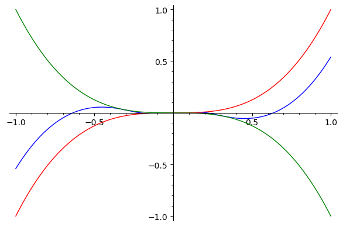
예제
조임정리를 이용하여 \(\displaystyle \lim _ {\theta \to 0} { \dfrac{ \sin \theta }{\theta } }=1\)임을 보여라.

\(0< \theta < \dfrac{ \pi }{2 }\)라 가정하자. [그림 2.2]에서 보듯이 삼각형 \(OPA\)의 면적은 부채꼴 \(OPA\)면적 보다 작고 부채꼴 \(OPA\)면적은 삼각형 \(OTA\)면적 보다 작다. 즉
\(0<\)삼각형 \(OPA\)의 면적\(<\)부채꼴\(OPA\)의 면적\(<\)삼각형\(OTB\)의 면적
이 성립하고 각 부분의 면적을 구하면
\[ 0< \dfrac{ 1}{ 2}\ \ \sin \theta < \dfrac{ 1}{2 }\theta < \dfrac{ 1}{ 2}\ \ \tan \theta \]
이 된다. 위 부등식에서 각 변을 \(\dfrac{ 1}{2 }\ \ \sin \theta\)로 나눈 후 역수를 취하면
\[ 1> \dfrac{ \sin \theta }{\theta }>\cos \theta \]
이 되고 \(\displaystyle \lim _ { \theta \to 0 } {\cos \theta }=1= \displaystyle \lim _ { \theta \to 0 } {1 }\)이므로 조임정리에 의해 \(\displaystyle \lim _ {\theta \to 0} { \dfrac{ \sin \theta }{\theta } }=1\)이다.■
⌛[문제 2.5] 함수 \(f\)가 모든 \(x\)에 대하여 \(|f(x)|\leq M\)일 때 \(\displaystyle \lim _ { x\to 0 } {x ^ {2} f(x) }\)을 구하여라.
P1=plot(sin(x)/x, -1,1, color='blue')
P2=plot(1, -1,1, color='red')
P3=plot(cos(x), -1,1, color='green')
show(P1+P2+P3)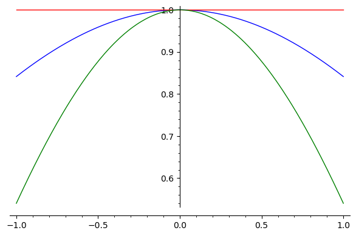
이 절에서는 극한이 존재하는 함수와 연속함수를 비교하여 설명한 후 연속함수를 정의하고 연속함수의 여러 가지 성질들을 살펴보고 예를 들어본다. 그리고 연속함수에서 성립되는 합성극한 정리와 연속함수의 근의 존재를 살펴볼 수 있는 중간값 정리를 소개하고 그것에 관련된 여러 가지 문제를 풀어본다.
함수 \(f\)에 대해 정의역의 \(x\)가 \(a\)로 가까이 갈 때 함숫값 \(f(x)\)의 극한값이 존재하고 그 극한값이 함숫값과 같으면 함수 \(f\)는 점 \(x=a\)에서 연속이라 말한다. 즉,
\[\displaystyle \lim_{x\to a} f(x) = f(a)\]
이면 함수 \(f\)는 \(x=a\)에서 연속이다.
정의역에 있는 모든 점에서 \(y=f(x)\)가 연속이면 함수 \(f\)를 연속함수라고 한다.
정의. 연속함수
함수 \(f\)가 \(a\)를 포함하는 개구간에서 정의될 때 (1),(2),(3)은 동치이다.
\(f\)가 \(a\)에서 연속이다.
\(\displaystyle \lim _ { x \rightarrow a }~ {f(x) }=f(a)\)이다.
임의의 \(\varepsilon >0\)에 대하여 적당한 \(\delta >0\)가 존재하여 \(| x-a|< \delta\)이면 \(|f(x)-f(a)|< \varepsilon\)이 성립한다.
정리. 연속함수의 성질
\(n\)을 양의 정수, \(c\)를 상수, \(f\)와 \(g\)를 \(x=a\)에서 연속인 함수라 하면
\((cf)\)도 \(x=a\)에서 연속이다.
\((f \pm g)\)도 \(x=a\)에서 연속이다.
\((f g)\)도 \(x=a\)에서 연속이다.
\(\left (\dfrac{ f}{g } \right )\)도 \(x=a\)에서 연속이다(단, \(g(a) \neq 0\)일 때).
\((f) ^ {n}\)도 \(x=a\)에서 연속이다.
\(\sqrt[n]{f}\)도 \(x=a\)에서 연속이다(단, \(n\)이 짝수 일 때 \(f(a)>0\)).
예제
함수 \(f(x)= \dfrac{ x ^ {2} +4x +3}{x+1 }\)의 연속성을 조사하라.
(풀이)
함수 \(f(x)\)는 \(x\neq -1\)일 때 \(f(x)= \dfrac{ x ^ {2} +4x +3}{x+1 }= \dfrac{( x+3)(x+1)}{(x+1) }=x+3~\)이고 \(x=-1\)일 때 정의되지 않는 함수이다. 따라서 \(x=-1\)에서 불연속이고 그 이외의 점에서는 연속인 함수이다.■
위 함수를 모든 실수에서 연속되게 만들어 줄 수 있을까? 연속의 정의를 생각해보면 불연속점에서 함수값을 극한값과 일치시켜 줄 때 불연속점을 제거할 수 있다.예제
함수 \(f(x)= \dfrac{ x ^ {2} +4x +3}{x+1 }\)을 모든 실수에서 연속이 되도록 정의하여라.
(풀이)
\(f(x)= {\begin{cases} {\dfrac{x ^ {2} +4x+3}{x+1} }&,~x \neq -1\\ ~~~~~~~~L&,~x=-1 \end{cases}} ~\)로 생각해보자. 불연속점에서 함수값을 극한값으로 정의하면 불연속점을 제거할 수 있다. \(x=-1~\)에서 극한값을 생각해 보면
\(\displaystyle \lim _ { x\to -1 } { \dfrac{ x ^ {2} +4x +3}{x+1 } }= \displaystyle \lim _ { x\to -1} {(x+3) }=2~\)이므로 \(L=2~\)라 하자. 그러면 함수 \(f(x)\)는 모든 실수에서 연속함수이다.■
이렇게 불연속점을 제거할 수 있을 때 제거가능 불연속이라 한다. 그렇다면 다음 예제의 함수는 모든 실수에서 연속인가? 만약 불연속점이 존재한다면 제거가능한가?예제
함수 \(f(x)= {\begin{cases} \dfrac{|x-2|}{x-2}&,~x \neq 2\\ ~~~~~1&,~x=2 \end{cases}}\)에 대한\(x=2~\)에서의 연속성을 조사하고 불연속이라면 제거가능 불연속인지 판단하라.
(풀이)
\(x=2\)에서 극한값을 살펴보자. 우극한 값은 \(\displaystyle \lim _ { x\to 2+ } { \dfrac{ x-2}{ x-2} }=1\)이고 좌극한값은
\(\displaystyle \lim _ { x\to 2- } { \dfrac{-( x-2)}{ x-2} }=-1\)이므로 \(x=2\)에서 극한값이 존재하지 않는다. 그러므로 \(x=2\)에서 불연속이 되고 이 불연속점을 제거하기 위해서는 그 점에서의 함수값을 극한값으로 정의해야 한다. 하지만 불연속점에서 극한값이 존재하지 않으므로 불연속점을 제거할 수 없다.■
정리.
\(\displaystyle \lim _ {x \to c} {f(x)} =L\)이고 \(g\)가 \(x=L\)에서 연속이라 하면
\[ \displaystyle \lim _ {x \to c} {g(f(x))} =g( \displaystyle \lim _ {x \to c} {f(x)} )=g(L) \]
이 성립한다.
합성극한정리에 의해 함수 \(f\)가 \(c\)에서 연속이고 함수 \(g\)가 \(f(c)\)에서 연속이면 합성함수 \(g \circ f\)도 \(c\)에서 연속이다.

예제
\(\displaystyle \lim _ {x \to 1} {}~\cos (x ^ {2} -2x+1)\)을 계산하여라.
(풀이)
정리 3.3을 이용하면 \(\displaystyle \lim _ {x \to 1} \cos (x ^ {2} -2x+1)=\cos 0=1\)이다.■
예제
\(\displaystyle \lim _ {x \to 2} {}~\sec ^ {-1} \left ( \dfrac{x+2}{2} \right )\)을 계산하여라.
(풀이)역코시컨트함수의 정의와 정리 3.3을 이용하면 \(\displaystyle \lim _ {x \to 2} {} ~\sec ^ {-1} \left ( \dfrac{x+2}{2} \right ) =\sec ^ {-1} 2= \dfrac{\pi }{3}\)이다.■
f(x)=asec((x+2)/x)
x0=2
극한(f,x0,upperbound=2)
극한표(f,x0,r=5)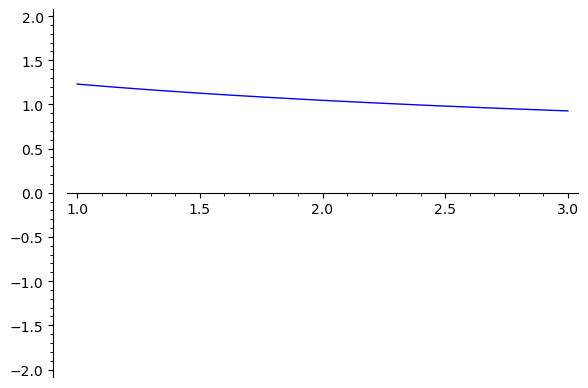
정리. 사잇값 정리
함수 \(f\)가 폐구간 \([a,b]\)에서 연속이고 \(y _ {0}\)가 \(f(a)\)와 \(f(b)\)사이의 임의의 수라고 하면
\(f(c)=y _ {0}\)를 만족하는 점 \(c\)가 \(a\)와 \(b\)사이에 존재한다.

따름정리.
함수 \(f\)가 폐구간 \([a,b]\)에서 연속이고 \(f(a) f(b) <0\)라 하면 \(f(c)=0\)인 점 \(c\)가 \(a\)와 \(b\)사이에 존재한다. 여기서 \(c\)를 \(f\)의 근이라 한다.
예제
구간 \([1,6]\)에서 \(f(x)= 4+3x-x ^ {2}\)라 하자. \(w=1\)일 때 사잇값 정리를 만족하는 \(c\)를 구하여라.
(풀이)
함수 \(f\)는 구간 \([1,6]\)에서 연속이고(다항함수는 모든 실수에서 연속) \(f(1)=6 , \ \ f(6)=-14\)이므로 사잇값 정리에 의하여 \(f(c)=1\)를 만족하는 \(c\)가 존재한다. \(f(c)=4+3c-c ^ {2} =1\)이므로 \(c= \dfrac{ 3 \pm \sqrt { 21} }{ 2}\)이다. 사잇값 정리에 의하여 \(c\)는 \(1\)과 \(6\)사이에 존재해야 하므로 중간값정리를 만족하는 \(c= \dfrac{ 3+ \sqrt { 21} }{ 2}\)이다.■
reset(); load('ch2.sage')
f(x)=4+3*x-x^2
구간=[1,6]
중간값=1
중간값정리(f,구간,중간값)예제
구간 \([-1,8]\)에서 함수 \(f(x)= x ^{-\frac{ 1}{ 3}}\)라 하자. \(w= \dfrac{ 1}{ 3}\)일 때 사잇값 정리를 만족하는 \(c\)를 구하여라.
(풀이)함수 \(f\)가 구간 \([-1,8]\)에서 연속이 아니므로 (\(x=0\)에서 불연속) 즉 중간값정리의 조건을 만족하지 않으므로 정리를 만족하는 \(c\)가 존재하지 않을 것으로 예상된다.
\(f(-1)= \dfrac{1}{\sqrt[3]{(-1)}}=-1\)이고 \(f(8)= \dfrac{1}{\sqrt[3]{8}}= \dfrac{ 1}{ 2}\)이므로 \(w=\dfrac{ 1}{3 } \in [-1, \dfrac{ 1}{2 }]\)이다. 그러나
\(f(c)= \dfrac{1}{\sqrt[3]{c}}= \dfrac{ 1}{3 }\)을 만족하는 \(c=27\)이지만 \(27 \not \in [-1, 8]\)이기 때문에 \(c=27\)은 중간값정리를 만족하는 \(c\)가 아니다.■
⌛[문제 3.8] 구간 \([1 , \sqrt { 7}]\)에서 함수 \(f(x) = \sqrt { 26-x ^ {2}}\)라 하고 \(w=4\)일 때 중간값정리를 만족하는 \(c\)를 구하여라.
f(x)=x^(-1/3)
구간=[-1,8]
중간값=1/3
중간값정리(f,구간,중간값)
f(x)=sgn(x)*abs(x)^(-1/3)
f.plot(-1,8)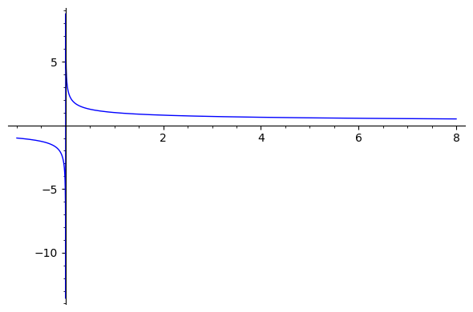
위의 예제들을 통하여 우리가 어떤 정리를 사용할 때 그 정리의 가정이 만족하는지 반드시 확인해야하고 정리의 결과도 무엇을 만족하는지 잘 살펴야한다. 중간값정리에서 함수가 주어진 폐구간에서 연속이라는 사실은 매우 중요하다.
앞에서 언급했듯이 중간값정리는 폐구간에서 연속인 함수의 근의 존재성을 보장하는데 아주 유용하게 사용된다. 함수 \(f\)가 폐구간 \([a,b]\)에서 연속이고 그 폐구간에서 음과 양인 값을 모두 갖는다면 중간값정리에 의해 \(f(c)=0\)을 만족하는 \(c\)가 \(a\)와 \(b\)사이에 존재하게 되고 이 \(c\)는 함수 \(f\)의 근이 될 것이다.
예제
구간 \(\left [0,\dfrac{ \pi }{ 2} \right ]\)에서 \(x-\cos x=0\)의 해가 존재하는지 판단하여라.
(풀이)함수 \(f(x)=x-\cos x\)는 다항함수와 삼각함수의 차이므로 모든 실수에서 연속 함수이고
\(f(0)= 0-\cos 0=-1<0\), \(f \left ( \dfrac{ \pi }{ 2}\right )= \dfrac{ \pi }{ 2}-\cos \dfrac{ \pi }{2 }= \dfrac{ \pi }{ 2}>0\)
이다. 따라서 중간값정리에 의해 \(f(c)=0\)인 \(c\)가 \(0\)과 \(\dfrac{ \pi }{ 2}\)사이에 존재한다.■
⌛[문제 3.10] 방정식 \(x ^ {2} + \dfrac{ 1}{ x}=1\)이 적어도 하나의 해를 가짐을 보여라.
f(x)=x-cos(x)
구간=[0,pi/2]
중간값=0
중간값정리N(f,구간,중간값)f(x)=x-cos(x)
구간=[0,1/2]
중간값=0
중간값정리N(f,구간,중간값)중간값정리에 의해 근의 존재가 보장된 함수가 있다면 그 함수의 근은 어떻게 구할 수 있을까? 보통 수치적 방법으로 오차 이내 범위에서 근을 구하게 된다.
수치적 방법 중에서 이분법을 소개한다. 이분법은 근이 존재하는 구간을 그 구간의 중점으로 계속 나누어서 해에 접근하는 방법이다.예제
방정식 \(x ^ {4} +x-3=0\)가 폐구간\([1,2]\)에서 해가 존재함을 보이고 해를 포함하는 구간의 길이가 \(\dfrac{ 1}{ 8}\)인 구간을 찾아라.
(풀이)
함수 \(f(x)=x ^ {4} +x-3\)는 모든 실수에서 연속이고 \(f(1)=-1<0\), \(f(2)=15 >0\)이다. 그러므로 중간값정리에 의하여 \(f(c)=0\)인 \(c\)가 \(1\)과 \(2\)사이에 존재한다. 이 구간의 중점을 기준
으로 \(c~\)가 어디에 있을지 알아보자. 구간 \(\left [\dfrac{ 3}{2 }, 2 \right ]\)에서 \(f \left ( \dfrac{ 3}{ 2}\right )= \dfrac{ 57}{16 }>0\)이고 \(f(2)=15 >0\)이므로 이 구간에서 근은 존재하지 않는다. 구간 \(\left [1, \dfrac{ 3}{2 } \right ]\)에서 \(f(1)=-1<0\)이고
\(f \left ( \dfrac{ 3}{ 2}\right )= \dfrac{ 57}{16 }>0\)이므로 근 \(c\)는 \(1\)과 \(\dfrac{ 3}{ 2}\)사이에 존재하게 된다. 주어진 구간에서 같은 작업을 반복하면 구간 \(\left [1, \dfrac{ 5}{4 } \right ]\)에서 \(f(1)=-1<0\)이고 \(f \left ( \dfrac{ 5}{ 4} \right )= \dfrac{ 177}{256 }>0\)이 되어 이 구간 안에 \(c\)가 존
재함을 알 수 있다. 한번 더 반복하면 구간 \(\left [\dfrac{ 9}{ 8}, \dfrac{ 5}{ 4}\right ]\)에서 \(f \left ( \dfrac{ 9}{8 } \right )=- \dfrac{ 1119}{ 4096} <0\)이고
\(f \left ( \dfrac{ 5}{ 4} \right )= \dfrac{ 177}{256 }>0\)이 되어 이 구간 안에 \(c\)가 존재함을 알 수 있다. 그러므로 해를 포함하는 구간은 \(\left [\dfrac{ 9}{ 8}, \dfrac{ 5}{ 4} \right ]\)이다.■
함수 \(f\)는 점 \(a\)를 포함한 개구간에서 정의되었다고 하자(단, \(a\)는 제외).
\(\displaystyle \lim _ {x \to a } {f(x)=L}\)이란 임의의 \(\varepsilon >0\)에 대하여 적당한 \(\delta >0\)가 존재하여 \(0<| x-a|< \delta\)이면 \(|f(x)-L|< \varepsilon\)이 성립한다는 의미이다.
함수 \(f\), \(g\), \(h\)가 \(x\neq c\)인 \(c\)를 포함하는 개구간에 있는 모든 \(x\)에 대하여,
\(g(x) \leq f(x) \leq Qh(x)\)이고, \(\displaystyle \lim _ { x \rightarrow c } {g(x) }= \displaystyle \lim _ { x \rightarrow c } {h(x) }=L\)이면 \(\displaystyle \lim _ { x \rightarrow c } {f(x) }=L\)이다.
함수 \(f\)가 \(a\)를 포함하는 개구간에서 정의될 때 아래 (1),(2),(3)은 동치이다.
\(f\)가 \(a\)에서 연속이다.
$_ { x a } {f(x) }=f(a) $이다.
임의의 \(\varepsilon >0\)에 대하여 적당한 \(\delta >0\)가 존재하여 \(0<| x-a|< \delta\)이면 \(|f(x)-f(a)|< \varepsilon\)이 성립한다.
함수 \(f\)가 폐구간 \([a,b]\)에서 연속이고 \(y _ {0}\)가 \(f(a)\)와 \(f(b)\)사이의 임의의 수라고 하면
\(f(c)=y _ {0}\)를 만족하는 점 \(c\)가 \(a\)와 \(b\)사이에 존재한다.